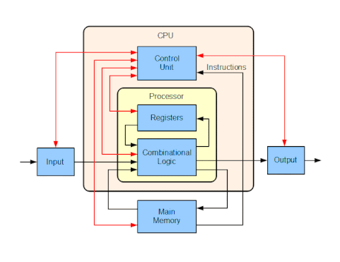
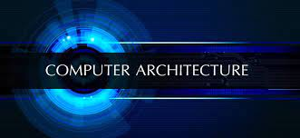

In computer engineering, computer architecture is a set of rules and methods that describe the functionality, organization, and implementation of computer systems. Some definitions of architecture define it as describing the capabilities and programming model of a computer but not a particular implementation.[1] In other definitions computer architecture involves instruction set architecture design, microarchitecture design, logic design, and implementation.
Computer architecture is concerned with balancing the performance, efficiency, cost, and reliability of a computer system. The case of instruction set architecture can be used to illustrate the balance of these competing factors. More complex instruction sets enable programmers to write more space efficient programs, since a single instruction can encode some higher-level abstraction (such as the x86 Loop instruction).[16] However, longer and more complex instructions take longer for the processor to decode and can be more costly to implement effectively. The increased complexity from a large instruction set also creates more room for unreliability when instructions interact in unexpected ways. The implementation involves integrated circuit design, packaging, power, and cooling. Optimization of the design requires familiarity with compilers, operating systems to logic design, and packaging.
The exact form of a computer system depends on the constraints and goals. Computer architectures usually trade off standards, power versus performance, cost, memory capacity, latency (latency is the amount of time that it takes for information from one node to travel to the source) and throughput. Sometimes other considerations, such as features, size, weight, reliability, and expandability are also factors. The most common scheme does an in-depth power analysis and figures out how to keep power consumption low while maintaining adequate performance.
Modern computer performance is often described in instructions per cycle (IPC), which measures the efficiency of the architecture at any clock frequency; a faster IPC rate means the computer is faster. Older computers had IPC counts as low as 0.1 while modern processors easily reach near 1. Superscalar processors may reach three to five IPC by executing several instructions per clock cycle.
Counting machine-language instructions would be misleading because they can do varying amounts of work in different ISAs. The "instruction" in the standard measurements is not a count of the ISA's machine-language instructions, but a unit of measurement, usually based on the speed of the VAX computer architecture.
Many people used to measure a computer's speed by the clock rate (usually in MHz or GHz). This refers to the cycles per second of the main clock of the CPU. However, this metric is somewhat misleading, as a machine with a higher clock rate may not necessarily have greater performance. As a result, manufacturers have moved away from clock speed as a measure of performance.
Performance is affected by a very wide range of design choices — for example, pipelining a processor usually makes latency worse, but makes throughput better. Computers that control machinery usually need low interrupt latencies. These computers operate in a real-time environment and fail if an operation is not completed in a specified amount of time. For example, computer-controlled anti-lock brakes must begin braking within a predictable and limited time period after the brake pedal is sensed or else failure of the brake will occur.
Power efficiency is another important measurement in modern computers. A higher power efficiency can often be traded for lower speed or higher cost. The typical measurement when referring to power consumption in computer architecture is MIPS/W (millions of instructions per second per watt). Modern circuits have less power required per transistor as the number of transistors per chip grows.[18] This is because each transistor that is put in a new chip requires its own power supply and requires new pathways to be built to power it. However the number of transistors per chip is starting to increase at a slower rate. Therefore, power efficiency is starting to become as important, if not more important than fitting more and more transistors into a single chip. Recent processor designs have shown this emphasis as they put more focus on power efficiency rather than cramming as many transistors into a single chip as possible.[19] In the world of embedded computers, power efficiency has long been an important goal next to throughput and latency.
Increases in clock frequency have grown more slowly over the past few years, compared to power reduction improvements. This has been driven by the end of Moore's Law and demand for longer battery life and reductions in size for mobile technology. This change in focus from higher clock rates to power consumption and miniaturization can be shown by the significant reductions in power consumption, as much as 50%, that were reported by Intel in their release of the Haswell microarchitecture; where they dropped their power consumption benchmark from 30 to 40 watts down to 10-20 watts.[20] Comparing this to the processing speed increase of 3 GHz to 4 GHz (2002 to 2006)[21] it can be seen that the focus in research and development are shifting away from clock frequency and moving towards consuming less power and taking up less space.